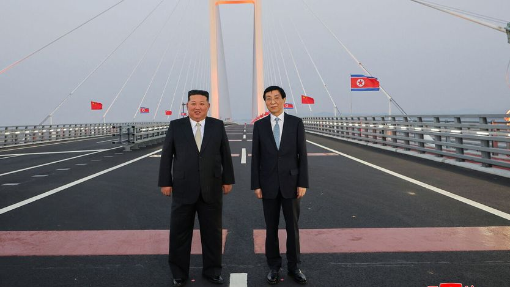

金正恩一次耐人寻味的访华
Kim Jong Un’s curious visit to China
朝鲜的独裁者正在修复与老朋友的纽带

- 金正恩10月24日突然访问与朝鲜接壤的丹东，这是他四年间把重心放在俄罗斯之后，明显回归对华关系的一个信号，也带着对美外交的伏笔。
- 到访却没有见习近平：中方称习近平需留在北京筹备早已排定的会议，改派党内排名第四的王沪宁接待；这种安排在他此前五次访华中从未出现过。
- 中朝经贸正在回暖：今年前九个月双边贸易额23亿美元，高于去年同期的19亿；连接丹东、拖了十余年的大桥也在10月15日通车，边境贸易限制也在同步放宽。
- 更值得看的是十一月：金正恩可能在深圳的亚太经合组织会议期间与特朗普会面，一些中国政府顾问称中方乐见其成，好让任何协议都有中国的话语权。
金正恩很少出国。因此他10月24日突然出现在与朝鲜接壤的中国城市丹东，值得注意。在向俄罗斯靠拢四年（为乌克兰战争提供兵力与物资）之后，他正在重建对华关系。他也可能在为对美新外交做准备，包括11月可能与特朗普会面。
此访的官方名义，是纪念中国1950年出兵朝鲜支援北方。中朝双方都在强调战时的并肩。今年是两国“友好”条约（一份共同防御协定）签订65周年。不过，金正恩在中国土地上如此突出地承认中国的战争贡献，仍属罕见。他对两国关系的用语也格外热络，称其“以鲜血凝成”。
同样不寻常的是，金正恩到了中国却没见习近平。两人6月在平壤见过——那是习近平七年来首次访朝，此前2025年还在北京举行过一次峰会。这一次，习近平需要留在北京筹备10月26日开幕的中央委员会会议（日程早已排定），改派党内排名第四的王沪宁前往。金正恩掌权以来五次访华，每次都与习近平本人会面。
金正恩通常乘专用装甲列车过境（该列车也能在中国铁轨上行驶）。这次他坐一辆梅赛德斯迈巴赫，驶过横跨鸭绿江的大桥。这座桥2014年完工，属于中国早先扩大交通连接的努力，但通车一再推迟——因为金正恩处决了一位主导该项目、被指图谋政变（且被认为过于亲华）的姑父。它终于在10月15日通车。
金正恩此访与大桥通车，似乎都意在缓解中国对俄罗斯影响力上升的担忧。中国占朝鲜对外贸易的九成以上。但金正恩与普京近来走得很近：以兵力和武器换取燃料、粮食与军事技术，两国2024年签署共同防御条约，还扩建了跨境基础设施，包括9月通车的一座公路桥。
作为回应，习近平公开淡化了朝核野心带来的忧虑，同时升级对朝交通、放宽边境贸易限制。今年前九个月，官方双边贸易额达23亿美元，高于去年同期的19亿美元。王沪宁表示，新桥有助于“扩大人员往来与贸易合作”。
最耐人寻味的是，金正恩此访可能是为了协调对美外交。特朗普第一任期曾三次与金正恩会面，希望达成结束朝鲜核计划的协议。其中两次会面前，金正恩都提前数周访华，与中方沟通。特朗普已表示愿再次会面，可能就在11月中旬于中国南方城市深圳举行的亚太经合组织领导人会议期间。
美方官员随后试图淡化这一设想，称会面可能性不大。但一些中国政府顾问说，中方乐见其成，希望借此重振影响力，并确保任何协议都有中国的话语权。让相互竞争的强国彼此牵制，金正恩又一次把一手弱牌打好了。